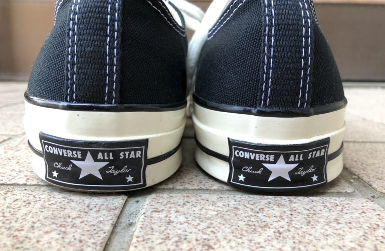
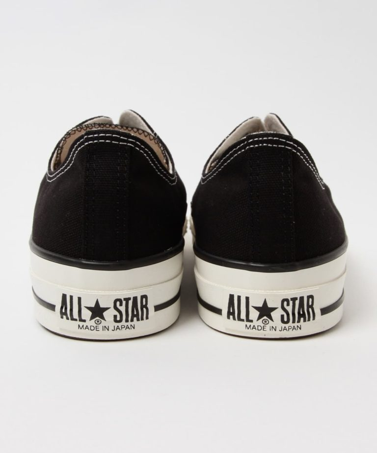
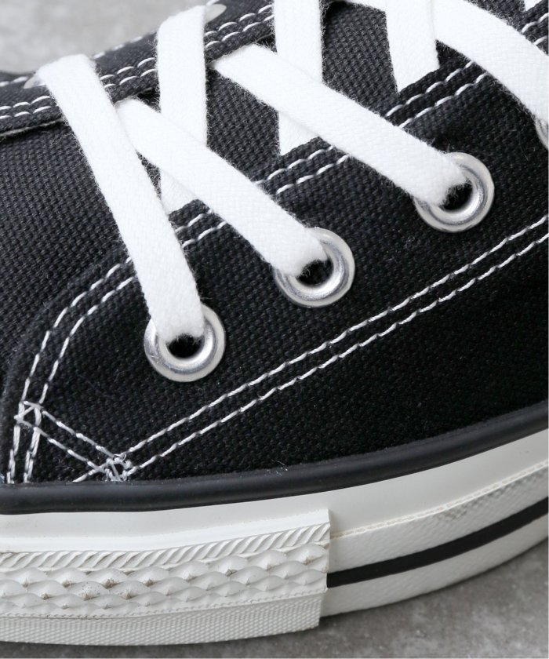

The Entrance
前橋駅から徒歩5分の所にある、海外古着や新品のセレクト品などを扱っているお店。
原宿の古着屋さんと、大手セレクトショップ出身の2人がセレクトする商品はどれもセンスがいい物ばかりなので
行くたびについつい買ってしまいます。
次に私が好きなスニーカーの1つでもあるコンバースについて紹介したいと思います。
コンバースには日本製のオールスターと海外製のCT70（チャックテイラー）というモデルがあります。
普段コンバースを履いている人はよく見かけますが、大体の人が日本製のオールスターというモデルを履いています。
CT70は日本では基本的に販売されていないので、CT70を履いている人はこだわりを持ったおしゃれな人が多いです。
そこで、それぞれの違いについて紹介します。


まずは、ヒールパッチについてです。上がCT70、下がオールスターです。
画像を見れば一目瞭然ですがCT70は三ツ星に対して日本製オールスターは、通常のロゴの下に「MADE IN JAPAN」が入っています。
やはりCT70のほうがかっこいいです。

次に、サイドステッチです。上がCT70、下がオールスターです。
CT70にだけカーブがかったステッチが施されています。
何も知らない人からすればあまり変わらないように見えますが、知ってる身からするとなぜかかっこよく見えます。
この他にもいろんな違いがありますがこれだけでもCT70のほうがかっこいいことがわかると思います。 街中でコンバースを履いている人をみかけたらCT70かオールスターか見てみると面白いと思います。